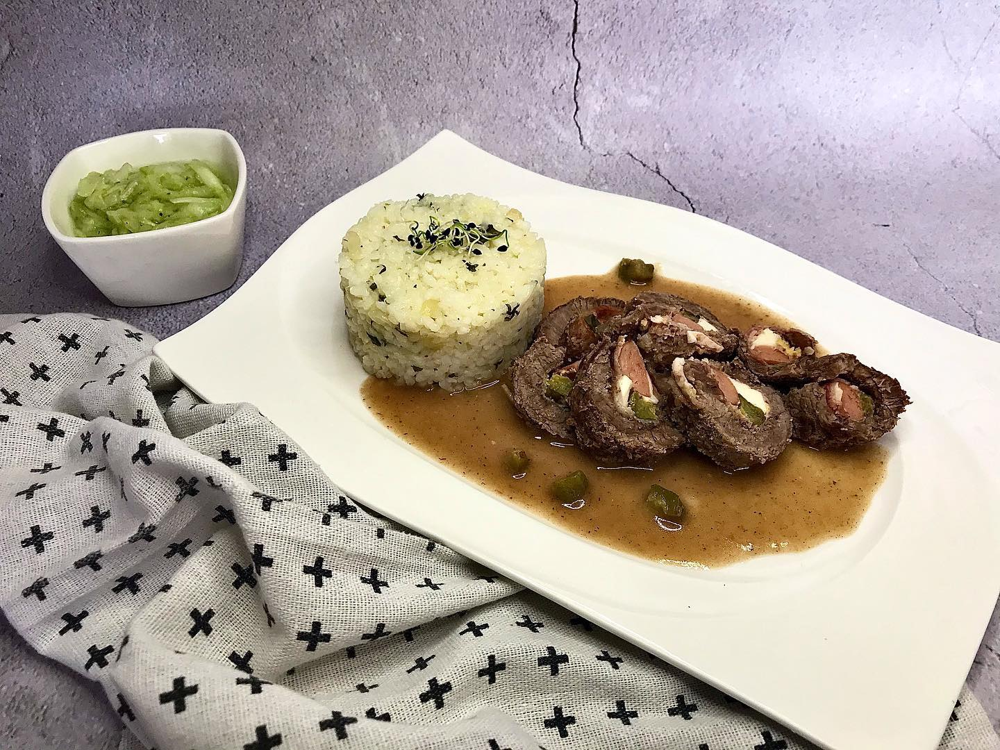

Uhorkový šalát podľa @cili_papricka_v_kuchyni — Normy Jedál
Dnes som na obed uvarila tradicne spanielske vtaciky z hovadzinky. S dusenou ryzou s petrzlenovou vnatkou a uhorkovym salatom. #spanielskevtacky #španielskevtáčky #spanielskevtaciky #španielskevtačky #španielskevtačky #hovadziemaso #kysleuhorky #slanina #bujonkahovadzia #davidkovokorenie #viedenskeparky #varenevajicko #uhorkovysalat #dnesjem #dnesvarim #dnesnyobed #varimslaskou